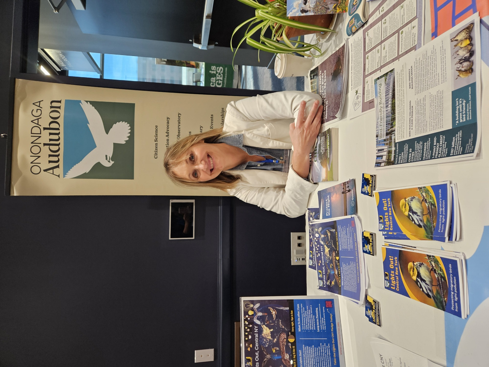
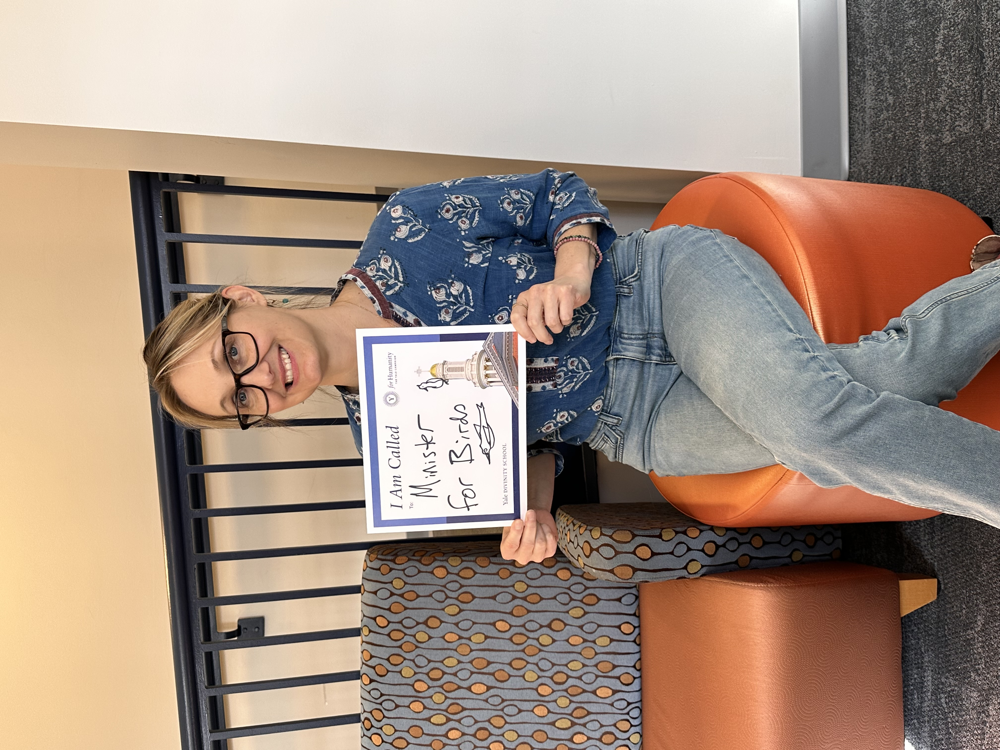
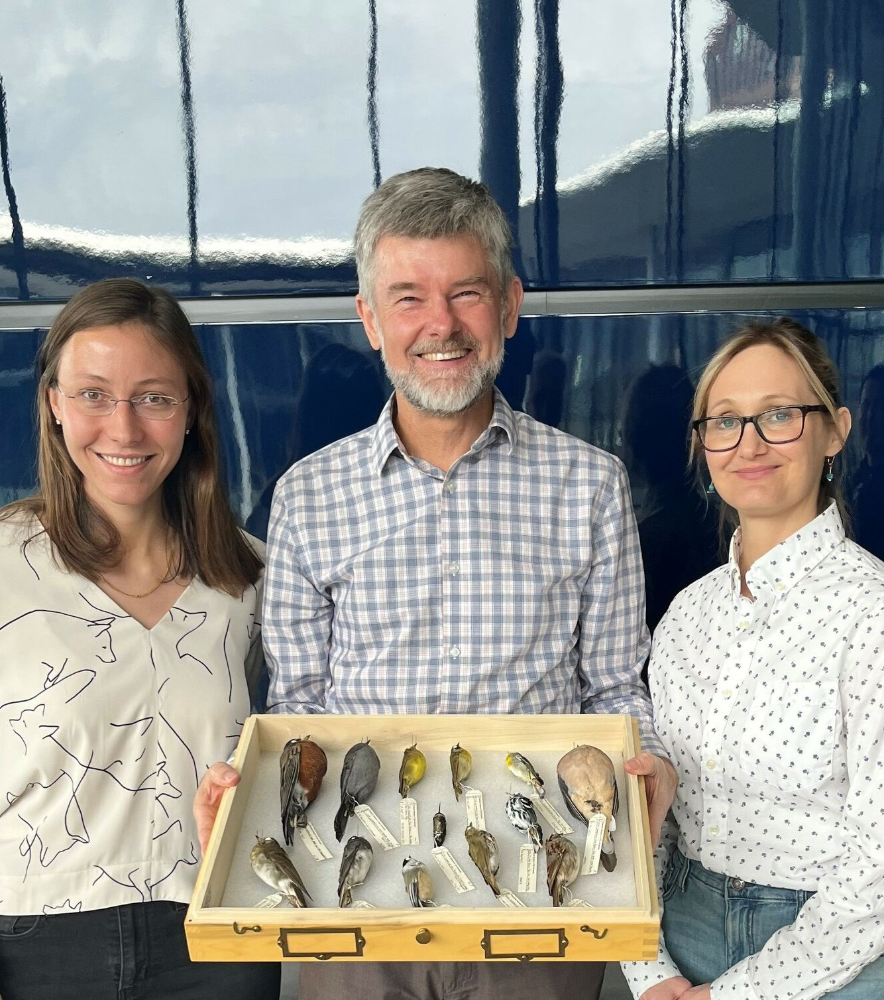

Home
Publications
Contact
Mini Summit
Meredith Barges
Meredith Barges, MDiv, PhD (ABD)
CV
/
LinkedIn
My PhD research project investigates the dynamics driving the adoption (and non-adoption) of mandatory municipal bird-friendly building policies in the U.S. and Canada. Drawing on public policy analysis, environmental ethics, and urban political ecology, I seek to explain why some cities have mandatory bird-friendly building policies, while others don't. In my advocacy role, I help people and decision makers to appreciate the complex lives of birds and how our decisions about building, lighting, and landscaping affect birds and human communities. I organize and partner with community groups to push for better rules to protect birds from building collisions and light pollution. I co-led a successful statewide campaign to pass
CT Public Act 23-143
, Connecticut's lights out bill, which requires all CT state agencies to turn off unnecessary outdoor nighttime lights at state-owned buildings year-round for birds. In 2024, I worked with local advocates to convince the Town of Greenwich to adopt a
Lighting Zoning Code Amendment
comprising the most comprehensive municipal lighting law in Connecticut. To reduce bird building collisions on my campus, I helped convince the SUNY School of Environmental Science & Forestry to adopt a mandatory bird-friendly building policy for all new buildings and major retrofits as part of the
2025 Sustainability Action Plan
. As a graduate student, I also led a community, art-based bird collision mitigation project
community, art-based bird collision mitigation project
that retrofitted several glass windscreens on campus.
Presentations & Speaking Engagements
Upcoming 2026
Better Building By Design VT
, Presenter, “Bird-Friendly Building Design," Burlington, VT, May 6-7, 2026 ~
Link
American Ornithological Society 2026 Annual Meeting
, Presenter, “Linking Science & Empathy in Successful Bird-friendly Building Advocacy," Amherst, MA, August 3-7, 2026 ~
Link
Past
Bird-Friendly Buffalo Symposium
, Speaker, “Lights Out Policy Benefits: For People and Wildlife," Buffalo, NY, April 23, 2026 ~
Link
Humane Canada 2026 Animal Summit
, Presenter, “Bird-friendly Toronto: How advocacy led to a municipal policybreakthrough in bird conservation," Whistler, B.C., April 20-21, 2026 ~
Link
Rochester Institute of Technology
, Guest Judge, “SMASH THE CRASH: An Environmental Initiative to End Bird-Window Collisions in Rochester," April 10, 2026 ~
Link
Massachusetts Liberal Arts College 'Green Living Seminar'
, Speaker, “How Laws Protecting Birds Strengthen Human Communities," North Adams, MA, April 8, 2026 ~
Link
Environment for the Americas
, Presenter, World Migratory Bird Day, “Policy for Birds,” October 16, 2025 ~
Link
13th Annual Nature-Society Workshop
, Presenter, “Bird-friendly Toronto,” October 3, 2025
AIA Vermont
, Presenter, “Bird-friendly Design for Architects,” September 18, 2025 ~
Recording
Onondaga Audubon Society
, Presenter, “The Beauty of Bird Friendly Design,” September 9, 2025 ~
Recording
Forum for Contemplative Ecology
, Guest Speaker, “Migratory Birds & the Night Sky,” August 4, 2025 ~
Recording
Audubon NY & CT
, Spring Council Meeting, Presenter “Lights Out for Birds,” April 4-6, 2025
Lights Out Greenwich
, Presenter, “The Consequences of Light Pollution,” June 7, 2024 ~
Recording
Pequot Library
, Lead Organizer & Presenter, “Living Bird-Friendly Series,” April 12-13, 2024 ~
Link
Audubon Rhode Island
, Presenter, “Bird-Friendly Building Policy: A Look at New U.S. City & State Laws,” February 4, 2024 ~
Recording
Connecticut Audubon Society
, Presenter “Making Connecticut’s Buildings Safer for Birds,” January 18, 2024 ~
Recording
AIA CT
, Presenter, “Bird-Friendly Building: Designing Safer Buildings for Birds,” November 7, 2023 ~
Link
Menunkatuck Audubon Society
, Presenter, “The Wonders and Perils of Spring Bird Migration in the Northeast,” May 12, 2024 ~
Recording
Valley Shore Community TV
A Slice of Life
, Special Guest, Episode 9 - “Lights Out,” June 12, 2023 ~
Recording
Liz Wexler Show
, Special Guest, “Lights Out! Help save the birds!,” April 20, 2023 ~
Recording
Branford Rotary Club
, Speaker, “Lights Out CT,” April 4, 2023
CT General Assembly Environmental Committee
, Expert Testimony, February 15, 2023 ~
Recording (min 2:39:26)


